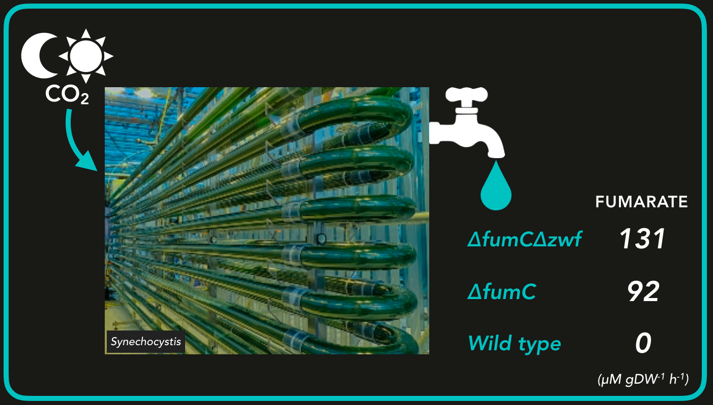

PHOTOSYNTHETIC CELL-FACTORY
Produce, export, and detect fumarate
The Project
Introduction
Irrespective of where you come from, we all share the global responsibility of ensuring that our societies are sustainable. We have been depleting the world’s resources and filling the atmosphere with abnormal levels of CO2 for too long. But CO2 can also be used as a resource - plants and certain bacteria have been doing so for billions of years. This is the foundation for the bio-based economy, reducing and eventually replacing the use of oil. Up to now, the focus in bio-based production has been on producing biofuels using plants to produce sugars which are then used as substrate in bacterial fermentation processes. But there is a better way - using cyanobacteria to take up CO2 from the atmosphere and directly converting it into useful products. Cyanobacteria do not compete for arable land, as plants do, and by taking up CO2 and directly converting it into product you eliminate the sugar producing step that is necessary for fermentation. What is more, based on data reported [1] by others, we calculate that plants have a production rate of 0.065 mmolcarbon gDW-1 hr-1, which is well below what has already been reported for the cyanobacterium Synechocystis sp. PCC6803 when engineered to produce a variety of chemicals [2].
Fumarate is used to make certain plastics, food additives, and medicine and is currently made from petroleum. The global market size of fumarate is estimated to exceed $760 million by 2020!
Goals
Scientific
We aim to create stable and robust photosynthetic cell factories for the commodity chemical fumarate, using Synechocystis. More specifically, we want our photosynthetic cell factories to (i) produce fumarate directly from CO2; (ii) make it readily accessible for downstream processing; and (iii) when fumarate has been produced and exported, we want to be able to detect it in loco. Moreover, we want to stably produce, export and detect fumarate under conditions mimicking industrial settings. These efforts should be guided by metabolic modelling and tailored to address public concerns and regulatory demands.
Engagement
We aim to shape our engagement activities to have the greatest impact in the short-term given the urgency of the challenge we tackle - sustainability. To achieve this we want to reach as many people as possible within the timeframe of the iGEM competition. Our target groups are (i) young adults and (ii) voters and decision makers. We use ~106 cells to inoculate a culture in the lab - we want to seed our ideas in 106 humans as well!
iGEM Community
We aim to be an active part of the iGEM community by setting up collaborations, taking part in iGEM-wide studies and surveys and attending iGEM meet-ups. Additionally, we want to contribute to the community by creating high-quality, broadly applicable BioBricks.
Approach
To reach our scientific goals we approached experts in the field to learn about the state of the art and main challenges. We also sought input from stakeholders in industry, as this is where our product will be used. Furthermore, since the success of a new technology depends on its acceptance amongst the general public, we investigated public perception regarding concerns about synthetic biology. To make sure our efforts are readily implementable we discussed current regulation and future policy plans with regulatory bodies. We organized the scientific work into three independent, yet complementary, modules:
MODULES
Produce
A major requisite of cyano-cell factories, according to expert's opinion, is that they must be able to produce in a stable fashion under industrial conditions. A recent quantitative analysis of the various ways to convert the energy of photons to chemical bonds has revealed that the direct utilization of sunlight is the most efficient. This however means that cells will be exposed to diurnal regimes in which they will inevitably be exposed to periods of darkness.
>>read more
Export
Our newly engineered cyanobacterial factories are capable of producing fumarate directly from CO2 using the energy of (sun)light. However, expert in the fields pointed out to us that it is only the fumarate that is excreted from the cells that is readily available in a downstream process of a “real-world” scenario.
>>read more
Detect
From conversations with Photanol we know that, in our quest to engineer fumarate-producing cyanobacterial factories, we need a way to quickly and easily determine if a given genetically engineered construct is actually producing fumarate.
>>read more
To reach young adults we started a facebook page to which we actively added content. The content was created with the audience in mind, with two movies and a series of podcasts as highlights of multimedia products. We actively picked up on opportunities to speak directly to young people which resulted in various educational activities. We broadened our reach further by publishing articles on 7 online platforms, in 3 printed magazines and newspapers and talking on 2 radio broadcasts. To achieve face-to-face contact with voters and decisions makers we visited several relevant events.
To actively be part of the fabric that makes the iGEM community so strong and united, we participated in the Interlab Study and filled out 13 surveys created by our colleague iGEMmers from other teams. We further conducted a lot of informal collaboration with other iGEM teams, worked out one of these collaborations extensively, and enthusiastically attended many meet-ups. We also ensured to fulfill all medal requirements.
Main achievements
Science
- Project design tailored to present industrial needs, public concerns and policy plans
- Model guided metabolic engineering and project design
- First synthetic photoautotrophic organism that is capable of converting CO2 directly to fumarate during day and night
- First fully segregated promoter library in a polyploid organism such as many cyanobacteria
- Identification of a native Synechocystis fumarate transporter
- A family of fumarate biosensors capable of quantifying its concentration from 1 up to 20 mM with different dynamic ranges.
Engagement
- Through 22 channels we reached up to three million people (3-fold higher than the number of cells we use to inoculate a culture!)
- The reached audience matches our target groups. This maximizes the immediate impact of the project, which is essential given its urgency as one of the major global challenges:
- Young adults were reached through social media, our movies and podcasts, and through helping with high school theses and presenting for university students
- General public (voters!) and decision makers were reached by promoting the project in events, online publications, radio broadcasts and printed media
iGEM Community
- Set up several collaborations
- Participated in the Interlab Study
- Filled out 13 surveys
- Attended 3 international meet-ups
- Fulfilled all medal requirements
- Constructed two versatile BioBricks, Bba_K2385001 and Bba_K2385000, and described them thoroughly on our parts page
References
- 1. Borak, B., Ort, D. R., & Burbaum, J. J. (2013). Energy and carbon accounting to compare bioenergy crops. Current opinion in biotechnology, 24(3), 369-375.
- 2. Angermayr, S. A., Rovira, A. G., & Hellingwerf, K. J. (2015). Metabolic engineering of cyanobacteria for the synthesis of commodity products. Trends in biotechnology, 33(6), 352-361.